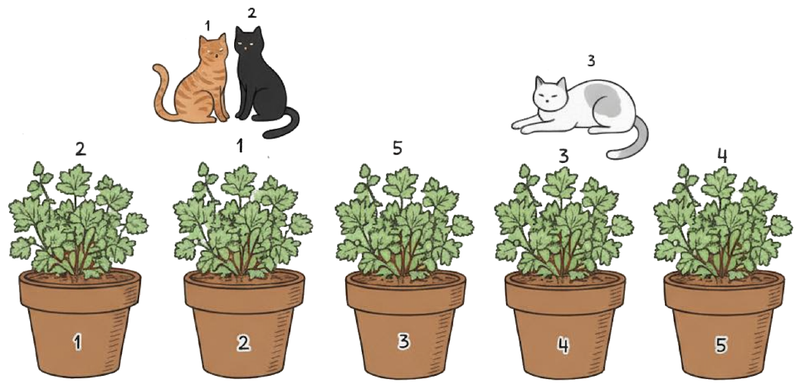

49th ICPC World Championship · Problem F
You are opening a cat cafe in Baku and would like to take a promotional photograph of all the cats sitting in the front window. Unfortunately, getting cats to do what you want is a famously hard problem. But you have a plan: you have bought a collection of m catnip plants, each of a different variety, knowing that each cat likes some of these varieties. There is a row of m pots in the window, numbered 1 to m in order, and you will place one plant in each pot. Each cat will then be persuaded (by means of a toy on a string) to walk along the row of pots from 1 to m. As soon as a cat reaches a pot with a catnip plant that it likes, it will stop there, even if there already are other cats at that plant.

You know which pot you would like each cat to stop beside. Can you find a way in which to place the plants in the pots to achieve this?
The first line of input contains an integer t (1 ≤ t ≤ 10 000), which is the number of test cases. The descriptions of t test cases follow.
The first line of each test case contains two integers n and m, where n (1 ≤ n ≤ 2·105) is the number of cats, and m (1 ≤ m ≤ 2·105) is the number of catnip plants (and also the number of pots). Catnip plants are numbered from 1 to m.
The following n lines each describe one cat. The line starts with two integers p and k, where p (1 ≤ p ≤ m) is the pot at which the cat should stop, and k (1 ≤ k ≤ m) is the number of catnip plants the cat likes. The remainder of the line contains k distinct integers, which are the numbers of the plants that the cat likes.
Over all test cases, the sum of n is at most 2·105, the sum of m is at most 2·105, and the sum of all k is at most 5·105.
For each test case, output either yes if it is possible to arrange the catnip plants as described above, or no if not.
2 3 5 2 2 1 5 2 3 1 4 5 4 2 3 4 3 5 2 2 1 5 2 3 1 4 5 5 2 3 4
yes no
Explanation of Sample 1: In the first test case, a possible ordering of the plants is [2, 1, 5, 3, 4]. This way, cat 1 will stop at pot 2, as it is the first pot with a plant variety that it likes. Cat 2 will stop there as well. Cat 3 will continue all the way to pot 4, as shown in Figure F.1.